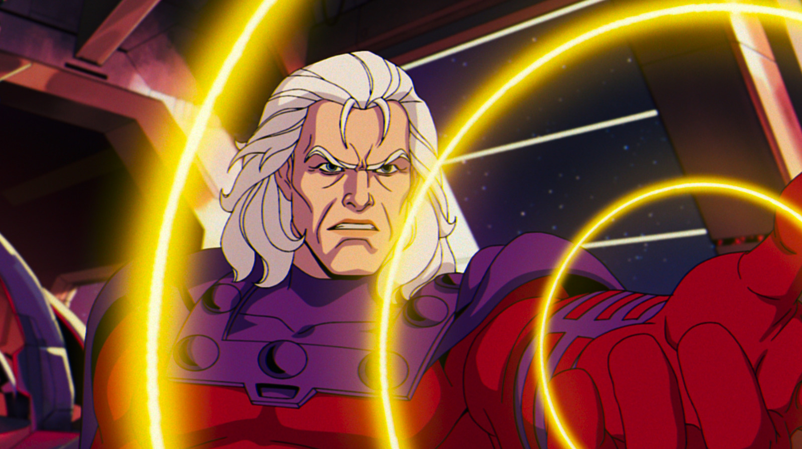
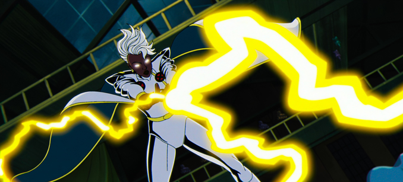
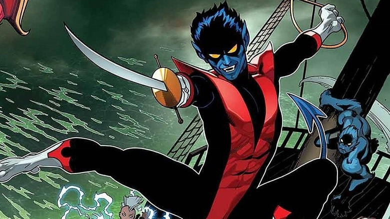
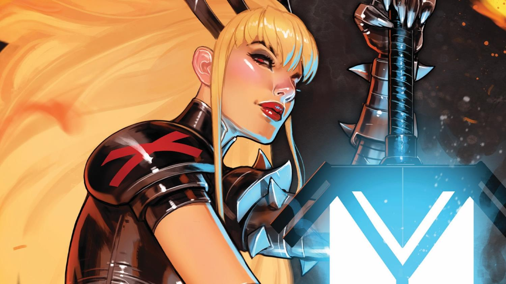
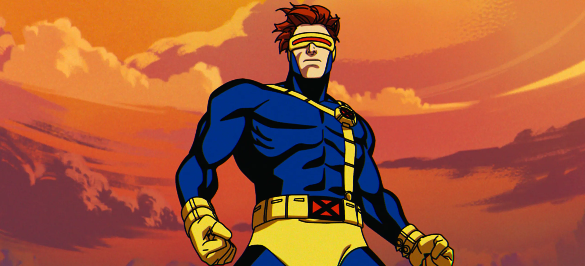

Magneto

Na saga X men, Magneto é um anti-herói complexo que assume o legado de Xavier,
liderando os X-Men com uma visão mais radical, mas não tirânica. Sobrevivente
do Holocausto, ele carrega traumas profundos que moldam sua desconfiança da
humanidade. Ao longo da série, tenta equilibrar sua ideologia com a esperança
de coexistência. Sua relação com Rogue e outros membros da equipe revela seu
lado mais humano. Apesar de seu passado extremo, ele busca redenção,
mostrando-se disposto a proteger os mutantes — mesmo que à sua maneira.
Gambit

Gambit, nome verdadeiro Remy LeBeau, é um mutante originário de Nova Orleans, com um
passado ligado a guildas de ladrões. Ele tem o poder de carregar objetos com energia
cinética explosiva — seu truque favorito é arremessar cartas de baralho como projéteis.
Charmoso, sarcástico e habilidoso em combate, Gambit é um anti-herói clássico: leal aos
X-Men, mas com um passado sombrio e complexo. Ele tem uma relação amorosa conturbada com
Rogue, marcada por tensão emocional e limites físicos, já que os poderes dela impedem o contato
direto. Em X-Men '97, ele continua sendo um dos personagens mais carismáticos e trágicos da equipe.
Vampira
Vampira, cujo nome verdadeiro é Anna Marie, é uma mutante poderosa dos X-Men, conhecida por
sua habilidade de absorver a força vital, memórias e poderes de qualquer pessoa que ela toque.
Por causa disso, vive isolada fisicamente, incapaz de manter contato íntimo com os outros — o
que gera grande sofrimento pessoal. Originalmente uma vilã na Irmandade de Mutantes, ela muda
de lado e é acolhida por Xavier. Em combate, Vampira é superforte e voa, poderes que absorveu
permanentemente da heroína Miss Marvel. Em X-Men '97, ela mantém sua personalidade determinada,
sensível e impulsiva, lidando com sua relação intensa com Gambit e os dilemas de não poder tocar
quem ama.
Tempestade

Noturno, cujo nome verdadeiro é Kurt Wagner, é um mutante de aparência demoníaca com pele azul,
três dedos em cada mão, pés semelhantes a cascos e uma cauda pontiaguda. Apesar de sua aparência
assustadora, possui uma personalidade gentil e é profundamente religioso. Tem o poder de se
teleportar instantaneamente em uma nuvem de enxofre, além de habilidades acrobáticas excepcionais.
Cresceu em um circo alemão antes de ser salvo pela Professora Xavier quando estava prestes a ser
linchado por uma multidão. Nos X-Men, Noturno traz leveza e humor ao grupo, mesmo tendo enfrentado
preconceito extremo durante toda sua vida. Sua fé católica e filosofia de vida contrastam com sua
aparência, fazendo dele um símbolo da mensagem de tolerância e aceitação dos X-Men.
Noturno

Noturno, cujo nome verdadeiro é Kurt Wagner, é um mutante de aparência demoníaca com pele azul,
três dedos em cada mão, pés semelhantes a cascos e uma cauda pontiaguda. Apesar de sua aparência
assustadora, possui uma personalidade gentil e é profundamente religioso. Tem o poder de se
teleportar instantaneamente em uma nuvem de enxofre, além de habilidades acrobáticas excepcionais.
Cresceu em um circo alemão antes de ser salvo pela Professora Xavier quando estava prestes a ser
linchado por uma multidão. Nos X-Men, Noturno traz leveza e humor ao grupo, mesmo tendo enfrentado
preconceito extremo durante toda sua vida. Sua fé católica e filosofia de vida contrastam com sua
aparência, fazendo dele um símbolo da mensagem de tolerância e aceitação dos X-Men.
Magia

Magia, cujo nome verdadeiro é Illyana Rasputina, é a irmã mais nova de Colossus e uma poderosa mutante com habilidades místicas.
Seu poder mais distintivo é criar "discos de teletransporte" que permitem viajar no espaço e entre dimensões.
Após ser sequestrada para o reino demoníaco de Limbo ainda criança, Illyana passou anos sob a influência do demônio Belasco,
onde desenvolveu poderes mágicos e forjou a Espada Soulsword, uma arma mística que manifesta seu poder interior.
Como resultado de seu passado traumático, Illyana possui uma personalidade complexa com um lado sombrio — pode transformar
parte de seu corpo em forma demoníaca, manifestando uma armadura mística. Nos X-Men, ela equilibra sua natureza mutante com
seu papel como Soberana do Limbo, lutando constantemente contra a escuridão em seu interior enquanto protege seus amigos
com lealdade feroz.
Ciclope

Ciclope, cujo nome verdadeiro é Scott Summers, é o líder tático dos X-Men, conhecido por
seu rigoroso senso de disciplina e estratégia. Seu poder mutante manifesta-se através de
raios ópticos de força concussiva que só podem ser contidos por lentes de quartzo rubi.
Órfão desde cedo, Scott cresceu sob os cuidados de Charles Xavier, tornando-se seu
primeiro aluno e pilar fundamental da equipe. Apesar da aparência sempre controlada,
Ciclope carrega profundas inseguranças e a pressão constante da liderança. Sua história
é marcada por relacionamentos complexos, especialmente com Jean Grey e Emma Frost,
e pela luta constante entre seguir ordens e questionar autoridades.
Ciclope

Ciclope, cujo nome verdadeiro é Scott Summers, é o líder tático dos X-Men, conhecido por
seu rigoroso senso de disciplina e estratégia. Seu poder mutante manifesta-se através de
raios ópticos de força concussiva que só podem ser contidos por lentes de quartzo rubi.
Órfão desde cedo, Scott cresceu sob os cuidados de Charles Xavier, tornando-se seu
primeiro aluno e pilar fundamental da equipe. Apesar da aparência sempre controlada,
Ciclope carrega profundas inseguranças e a pressão constante da liderança. Sua história
é marcada por relacionamentos complexos, especialmente com Jean Grey e Emma Frost,
e pela luta constante entre seguir ordens e questionar autoridades.
Ciclope
Ciclope, cujo nome verdadeiro é Scott Summers, é o líder tático dos X-Men, conhecido por
seu rigoroso senso de disciplina e estratégia. Seu poder mutante manifesta-se através de
raios ópticos de força concussiva que só podem ser contidos por lentes de quartzo rubi.
Órfão desde cedo, Scott cresceu sob os cuidados de Charles Xavier, tornando-se seu
primeiro aluno e pilar fundamental da equipe. Apesar da aparência sempre controlada,
Ciclope carrega profundas inseguranças e a pressão constante da liderança. Sua história
é marcada por relacionamentos complexos, especialmente com Jean Grey e Emma Frost,
e pela luta constante entre seguir ordens e questionar autoridades.
Ciclope
Ciclope, cujo nome verdadeiro é Scott Summers, é o líder tático dos X-Men, conhecido por
seu rigoroso senso de disciplina e estratégia. Seu poder mutante manifesta-se através de
raios ópticos de força concussiva que só podem ser contidos por lentes de quartzo rubi.
Órfão desde cedo, Scott cresceu sob os cuidados de Charles Xavier, tornando-se seu
primeiro aluno e pilar fundamental da equipe. Apesar da aparência sempre controlada,
Ciclope carrega profundas inseguranças e a pressão constante da liderança. Sua história
é marcada por relacionamentos complexos, especialmente com Jean Grey e Emma Frost,
e pela luta constante entre seguir ordens e questionar autoridades.